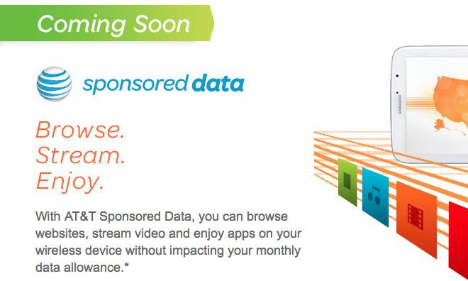

Don't Tread on the Net

Sign the petition to Republican lawmakers:
"Killing net neutrality will silence conservative voices online. Protect freedom on the internet. Protect net neutrality."
Telecom monopolies like Comcast and Verizon have spent millions trying to paint net neutrality as a liberal issue and a form of “burdensome regulation,” but really it’s the basic technological principle that has guided the Internet since its beginning. It prevents government-friendly Internet providers from abusing their gatekeeper power, and makes the Internet a powerful platform for economic innovation, free speech, and open exchange of ideas. Conservative and libertarian voices are already facing censorship from Silicon Valley tech companies. Killing net neutrality will make that situation even worse, and will silence debate on the Internet.
How will repealing net neutrality will hurt conservatives?
Net neutrality ensures that Internet Service Providers (ISPs) can't block, censor or throttle traffic to websites. Without net neutrality, Comcast could legally slow down traffic to conservative sites and speed up traffic to its own news websites, like MSNBC. Verizon could be pressured to restrict people from visiting websites that promote guns or sell guns in order to be politically correct. Net neutrality doesn’t give the government any control over online content, it prevents big companies from restricting and manipulating what you can see and do online.
It's not just the ISPs, either. Killing net neutrality will give big Silicon Valley companies, who have been systematically censoring conservative voices and even voices on the left that are critical of the government or the Democratic Party companies even MORE POWER to manipualate the flow of information online. The largest, most incumbent tech companies will control even more of the web, since they’ll be able to squash competition from startups who can’t pay “protection money” to the ISPs.
Julian Assange, the founder of WikiLeaks and a vocal supporter of Donald Trump, warned the White House of this very possibility:

But what makes you think they will
Because they've done it over and over and over again. The term "net neutrality" was actually first used to discuss protecting Americans after Comcast banned users from protecting their own online privacy and AT&T prevented customers from using their own wi-fi routers. Since then, Verizon, AT&T and T-Mobile colluded with Google to block innovative apps — such as wireless tethering and "hotspot" apps — from entering the marketplace. And what about the time AT&T schemed with Apple to restrict access to Skype? Or when all five major ISPs actually slowed down 75% of all internet traffic?
The FCC’s repeal of net neutrality hasn’t even officially gone into effect yet and — surprise, surprise! — AT&T has already rolled out a "sponsored data plan". This is what they're advertising on their website:

And what about those big Silicon Valley companies? Facebook doesn't want private individuals to buy and sell guns. Twitter shadow-bans users for supporting Donald Trump. YouTube has purged conservative videos. This censorship is being perpetrated by the biggest players in social media. Repealing net neutrality will give these companies even more power to censor anything deemed “offensive” and will prevent new companies from competing with them ... which is exactly why they've stayed silent during this process.
So what? The free market will sort things out.
That would be the case … if ISPs operated in a free market. Unfortunately, for years ISPs have leveraged their political influence &ndash particularly with Democrats &ndash in order to carve up the country into local and regional monopolies and duopolies, driving up prices for everyday Americans while providing us with slow internet speeds and terrible customer service. More than 50 million American households have no choice for their ISP.
And don’t forget, these companies have achieved this monopoly status with protection and help from the U.S. government. And in return, these massive companies have been repeatedly caught helping the government spy on U.S. citizens en masse, making even the abuses detailed in the FISA memos look minor in comparison. These companies are so close to the government, it’s hard to imagine they wouldn’t block content at the government’s request.
The green areas of this map show where customers have only one option:

Does that look like freedom of choice? Or does it look like ISPs spending over a hundred million dollars lobbying Washington to protect their companies from competition?
But net neutrality is heavy-handed Obama-era regulations!
WRONG. Mainstream media outlets constantly give Obama credit for net neutrality protections. But net neutrality was not “invented” by the Democratic party in 2015. In fact, it has been supported by previous Republican FCC leadership, conservative Supreme Court Justice Antonin Scalia, groups like the Christian Coalition, and thousands of small businesses, startups, and entrepreneurs.
The idea of net neutrality itself has literally been around since the internet was invented. Just look at what Sir Tim Berners-Lee, the inventor of the internet, has to say about it:

All the FCC did in 2015 was clarify the legal framework that allows them to prevent ISP abuses. And the only reason they did is because Verizon sued to get the previous rules struck down. Then ISPs hated the new rules the FCC put in place after the Internet rose up like during the SOPA/PIPA fight. They whined and claimed the sky was falling, claiming that basic rules preventing them from blocking, throttling, and running anti-competitive scams were hurting their ability to invest in faster networks. But all of the studies they funded claiming that have been debunked. Net neutrality protects the free market by preventing ISPs from picking winners and losers. And it ensures that NOBODY can restrict your freedom of speech on the internet ... not even the government. Because without net neutrality, they WILL tell you what you can and can't do online.
This won't affect my cryptocurrency, though ... will it?
By nature, cryptocurrencies like Bitcoin and Ethereum are decentralized systems, relying on peer-to-peer communications. ISPs have already been eager to block peer-to-peer applications &mdash like Bittorrent &mdash in the past, so it's entirely reasonable to think that they might block peer-to-peer communications again with the repeal of net neutrality. Given that the aspiration of cryptocurrency is to erode the power of financial institutions and place more power back in the hands of regular people, ISPs will likely face heavy pressure from block or throttle access to cryptocurrency exchanges due to legal concerns or anti-competitive practices.
Restricting access to globally-traded cryptocurrencies in America likely won't kill those cryptocurrencies ... at least not overnight. But America makes up 30% of the Bitcoin market, so American policies will have a HUGE impact on the value of existing cryptocurrencies and could prevent new competitors from entering the market.
Bottom line: Don't let government bureaucrats steal your internet freedom
The fact of the matter is that 83% of all Americans , support net neutrality, including 3 out of 4 Republicans and 76% of Independents. No one wants their cable company to control where they can get their online news from, how they watch videos and listen to music, and what websites they can visit. No one wants their cable company to control where they can get their online news from, how they watch videos and listen to music, and what websites they can visit. Several brave Republican lawmakers, both in DC and in the states, have started speaking out against the establishment line and criticizing the FCC’s decision to screw over consumers in a handout to the ISPs.
Ajit Pai, the former Verizon lawyer in charge of the FCC, lied about his reasons for killing net neutrality and ignored comments from millions of Americans. He even undermined States' rights by forbidding us from enacting our own laws. Why would he do that? Hm...

Congress works for you! So make them actually do their job for once. Tell them that you support net neutrality, and they damn well better support net neutrality, too.
Liberal groups are more than happy to take credit for net neutrality and use it as a tool to win over voters at the polls in November. Republicans in Congress need to wake up, catch up to the Internet-age, and vote against the FCC repeal or they’ll be handing Democrats a freebie in 2018.
Built by: